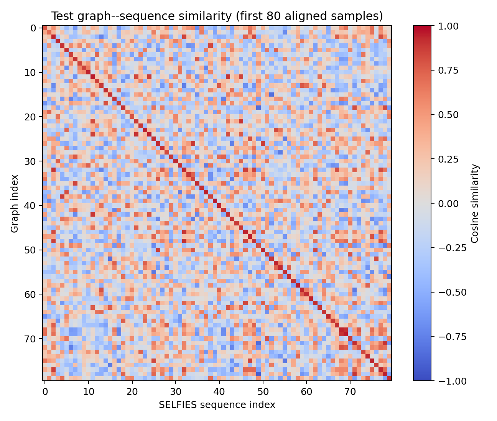

Project 4 / Molecular representation learning
Molecular Graph–Sequence Learning and Generation
Align molecular graph and SELFIES representations, then generate and screen molecular sequences.
Assignment objective
Clean Lipophilicity; implement a three-layer weighted GCN and specified causal Transformer; warm up language modeling, jointly align views, evaluate retrieval, and validate 300 generations at each of three temperatures.
Implemented approach
RDKit canonicalization, deduplication, and a 100-symbol SELFIES limit precede fixed splits and a training-only vocabulary. Separate atom-field embeddings feed three residual GCNConv layers with approximate bond-order weights and global mean pooling. The causal Transformer has four layers, six heads, width 192, feedforward width 512, learned positions, and causal/padding masks. Normalized 128-dimensional projections align graph and EOS representations. After 15 warm-up epochs, up to 40 joint epochs optimize token cross-entropy, symmetric contrastive loss, and positive-pair cosine loss. Sampling uses top-k 20 and nucleus p=0.95. Staged screening covers parsing, sanitization, connectedness, elements, radicals, percentile ranges, and charge; canonical novelty and radius-two Morgan similarity use training structures.
Inputs
MoleculeNet Lipophilicity raw CSV and processed PyG tensors are present. Saved statistics record 4,200 originals, six sequence-length removals, 4,194 usable molecules, splits 3,355/419/420, and vocabulary size 52. The lipophilicity target is metadata, not a property-prediction training objective.
Recorded results
Saved CSV records graph-to-sequence test top-1/top-5 of 81.90%/99.05% and reverse retrieval of 79.05%/98.10% on 420 pairs. Mean matching/nonmatching cosine is 0.8922/0.0129. Acceptance is 273/300 at temperature 0.8 (91.00%), 250/300 at 1.0 (83.33%), and 183/300 at 1.2 (61.00%); all 900 pass RDKit parsing/sanitization. Per temperature, accepted structures are unique and novel versus training under the implemented definitions. Recorded runtime is 2,110.3 seconds on CPU, excluding installation and initial dataset loading.
Reproducibility and limitations
The trained joint-model checkpoint is absent. Random splits do not test scaffold generalization; scalar bond weights omit richer chemistry. Validity, novelty, and QED do not establish stability, synthesis feasibility, safety, or biological utility. The approximate 30-minute Kaggle GPU target was not verified by this CPU execution.

Tools
Python, PyTorch, PyTorch Geometric, RDKit, SELFIES, NumPy, pandas, scikit-learn, Matplotlib, tqdm
Original materials
Original files remain in the repository. Review access credentials, identifiers, and rights before making them public.